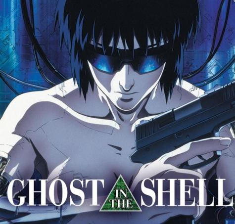
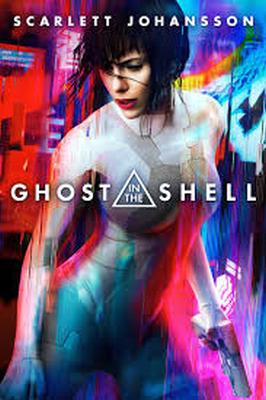

Ghost in the Shell is a Japanese media franchise originally published as a seinen manga series of the same name written and illustrated by Masamune Shirow. The manga, first serialized in 1989 under the subtitle of The Ghost in the Shell, and later published as its own tankōbon volumes by Kodansha, told the story of the fictional counter-cyberterrorist organization Public Security Section 9, led by protagonist Major Motoko Kusanagi, in the mid-21st century of Japan.

Animation studio Production I.G has produced several different anime adaptations of Ghost in the Shell, starting with the 1995 film of the same name, telling the story of Section 9's investigation of the Puppet Master.
The television series Ghost in the Shell: Stand Alone Complex followed in 2002, telling an alternate story from the manga and first film, featuring Section 9's investigations of government corruption in the Laughing Man and Individual Eleven incidents.
A sequel to the 1995 film, Ghost in the Shell 2: Innocence, was released in 2004. 2013 saw the start of the Ghost in the Shell: Arise original video animation (OVA) series, consisting of four parts through mid-2014.
The series was recompiled in early 2015 as a television series titled Ghost in the Shell: Arise - Alternative Architecture, airing with an additional two episodes (one part). An animated feature film produced by most of the Arise staff, titled Ghost in the Shell: The New Movie, was released on June 20, 2015.

A live-action American film of the same name was released on March 31, 2017.